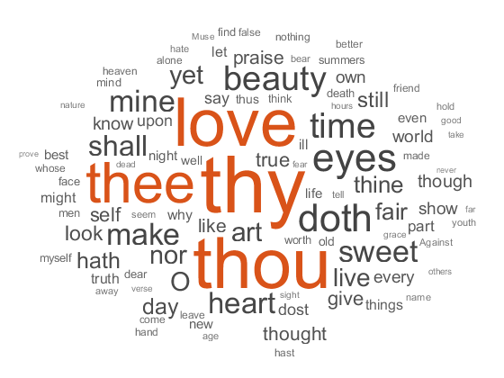

wordcloud
Create word cloud chart from text data
Syntax
Description
wordcloud(___,
specifies additional Name,Value)WordCloudChart properties using one or
more name-value pair arguments.
wordcloud(
creates the word cloud in the figure, panel, or tab specified by
parent,___)parent.
wc = wordcloud(___)WordCloudChart object. Use wc
to modify properties of the word cloud after creating it. For a list of
properties, see WordCloudChart Properties.
Note
Text Analytics Toolbox extends the functionality of the wordcloud (MATLAB®) function. It adds support for creating word clouds directly from string arrays,
and creating word clouds from bag-of-words models, bag-of-n-gram models, and LDA
topics. For the wordcloud (Text Analytics Toolbox) reference page, see wordcloud (Text Analytics Toolbox).
Examples
Load the example data sonnetsTable. The table tbl contains a list of words in the variable Word, and the corresponding frequency counts in the variable Count.
load sonnetsTable
head(tbl) Word Count
___________ _____
{'''tis' } 1
{''Amen'' } 1
{''Fair' } 2
{''Gainst'} 1
{''Since' } 1
{''This' } 2
{''Thou' } 1
{''Thus' } 1
Plot the table data using wordcloud. Specify the words and corresponding word sizes to be the Word and Count variables respectively.
figure wordcloud(tbl,'Word','Count'); title("Sonnets Word Cloud")

If you have Text Analytics Toolbox™ installed, then you can create word clouds directly from string arrays. For more information, see wordcloud (Text Analytics Toolbox). If you do not have Text Analytics Toolbox, then you must preprocess the text data manually.
This example shows how to create a word cloud from plain text by reading it into a string array, preprocessing it, and passing it to the wordcloud function.
Read the text from Shakespeare's Sonnets with the fileread function and convert it to string.
sonnets = string(fileread("sonnets.txt")); extractBefore(sonnets,"II")
ans =
"THE SONNETS
by William Shakespeare
I
From fairest creatures we desire increase,
That thereby beauty's rose might never die,
But as the riper should by time decease,
His tender heir might bear his memory:
But thou, contracted to thine own bright eyes,
Feed'st thy light's flame with self-substantial fuel,
Making a famine where abundance lies,
Thy self thy foe, to thy sweet self too cruel:
Thou that art now the world's fresh ornament,
And only herald to the gaudy spring,
Within thine own bud buriest thy content,
And tender churl mak'st waste in niggarding:
Pity the world, or else this glutton be,
To eat the world's due, by the grave and thee.
"
Split sonnets into a string array whose elements contain individual words. To do this, remove the punctuation characters and join all the string elements into a 1-by-1 string and then split on the space characters. Then, remove words with fewer than five characters and convert the words to lowercase.
punctuationCharacters = ["." "?" "!" "," ";" ":"]; sonnets = replace(sonnets,punctuationCharacters," "); words = split(join(sonnets)); words(strlength(words)<5) = []; words = lower(words); words(1:10)
ans = 10×1 string
"sonnets"
"william"
"shakespeare"
"fairest"
"creatures"
"desire"
"increase"
"thereby"
"beauty's"
"might"
Convert sonnets to a categorical array and then plot using wordcloud. The function plots the unique elements of C with sizes corresponding to their frequency counts.
C = categorical(words);
figure
wordcloud(C);
title("Sonnets Word Cloud")
Create a word cloud from plain text by reading it into a string array, preprocessing it, and passing it to the wordcloud function.
Read the text from Shakespeare's Sonnets with the fileread function and convert it to string.
sonnets = string(fileread('sonnets.txt')); extractBefore(sonnets,"II")
ans =
"THE SONNETS
by William Shakespeare
I
From fairest creatures we desire increase,
That thereby beauty's rose might never die,
But as the riper should by time decease,
His tender heir might bear his memory:
But thou, contracted to thine own bright eyes,
Feed'st thy light's flame with self-substantial fuel,
Making a famine where abundance lies,
Thy self thy foe, to thy sweet self too cruel:
Thou that art now the world's fresh ornament,
And only herald to the gaudy spring,
Within thine own bud buriest thy content,
And tender churl mak'st waste in niggarding:
Pity the world, or else this glutton be,
To eat the world's due, by the grave and thee.
"
Split sonnets into a string array whose elements contain individual words. To do this, remove the punctuation characters and join all the string elements into a 1-by-1 string and then split on the space characters. Then, remove words with fewer than five characters and convert the words to lowercase.
punctuationCharacters = ["." "?" "!" "," ";" ":"]; sonnets = replace(sonnets,punctuationCharacters," "); words = split(join(sonnets)); words(strlength(words)<5) = []; words = lower(words); words(1:10)
ans = 10×1 string
"sonnets"
"william"
"shakespeare"
"fairest"
"creatures"
"desire"
"increase"
"thereby"
"beauty's"
"might"
Find the unique words in sonnets and count their frequency. Create a word cloud using the frequency counts as size data.
[numOccurrences,uniqueWords] = histcounts(categorical(words));
figure
wordcloud(uniqueWords,numOccurrences);
title("Sonnets Word Cloud")
Load the example data sonnetsTable. The table tbl contains a list of words in the Word variable, and corresponding frequency counts in the Count variable.
load sonnetsTable
head(tbl) Word Count
___________ _____
{'''tis' } 1
{''Amen'' } 1
{''Fair' } 2
{''Gainst'} 1
{''Since' } 1
{''This' } 2
{''Thou' } 1
{''Thus' } 1
Plot the table data using wordcloud. Specify the words and corresponding word sizes to be the Word and Count variables respectively. To set the word colors to random values, set 'Color' to a random matrix or RGB triplets with one row for each word.
numWords = size(tbl,1); colors = rand(numWords,3); figure wordcloud(tbl,'Word','Count','Color',colors); title("Sonnets Word Cloud")

If you have Text Analytics Toolbox installed, then you can create word clouds directly from string arrays. If you do not have Text Analytics Toolbox, then you must preprocess the text data manually. For an example showing how to create a word cloud without Text Analytics Toolbox, see Prepare Text Data for Word Clouds.
To access the sonnets.txt dataset, open the Create Word Cloud from Text Data (Text Analytics Toolbox)
example using the openExample function.
openExample('textanalytics/CreateWordCloudFromTextDataExample')Extract the text from sonnets.txt using
extractFileText.
str = extractFileText("sonnets.txt"); extractBefore(str,"II")
ans =
"THE SONNETS
by William Shakespeare
I
From fairest creatures we desire increase,
That thereby beauty's rose might never die,
But as the riper should by time decease,
His tender heir might bear his memory:
But thou, contracted to thine own bright eyes,
Feed'st thy light's flame with self-substantial fuel,
Making a famine where abundance lies,
Thy self thy foe, to thy sweet self too cruel:
Thou that art now the world's fresh ornament,
And only herald to the gaudy spring,
Within thine own bud buriest thy content,
And tender churl mak'st waste in niggarding:
Pity the world, or else this glutton be,
To eat the world's due, by the grave and thee.
"Display the words from the sonnets in a word cloud.
figure wordcloud(str);

Input Arguments
Name-Value Arguments
Specify optional pairs of arguments as
Name1=Value1,...,NameN=ValueN, where Name is
the argument name and Value is the corresponding value.
Name-value arguments must appear after other arguments, but the order of the
pairs does not matter.
Before R2021a, use commas to separate each name and value, and enclose
Name in quotes.
Example: 'HighlightColor','red' sets the highlight color to
red.
The WordCloudChart properties listed here are only a subset. For
a complete list, see WordCloudChart Properties.
Maximum number of words to display, specified as a non-negative integer. The software displays
the MaxDisplayWords largest words.
Word color, specified as an RGB triplet, a character vector containing a color name,
or an N-by-3 matrix where N is the length of
WordData. If Color is a matrix, then each
row corresponds to an RGB triplet for the corresponding word in
WordData.
RGB triplets and hexadecimal color codes are useful for specifying custom colors.
An RGB triplet is a three-element row vector whose elements specify the intensities of the red, green, and blue components of the color. The intensities must be in the range
[0,1]; for example,[0.4 0.6 0.7].A hexadecimal color code is a character vector or a string scalar that starts with a hash symbol (
#) followed by three or six hexadecimal digits, which can range from0toF. The values are not case sensitive. Thus, the color codes"#FF8800","#ff8800","#F80", and"#f80"are equivalent.
Alternatively, you can specify some common colors by name. This table lists the named color options, the equivalent RGB triplets, and hexadecimal color codes.
| Color Name | Short Name | RGB Triplet | Hexadecimal Color Code | Appearance |
|---|---|---|---|---|
"red" | "r" | [1 0 0] | "#FF0000" |
|
"green" | "g" | [0 1 0] | "#00FF00" |
|
"blue" | "b" | [0 0 1] | "#0000FF" |
|
"cyan"
| "c" | [0 1 1] | "#00FFFF" |
|
"magenta" | "m" | [1 0 1] | "#FF00FF" |
|
"yellow" | "y" | [1 1 0] | "#FFFF00" |
|
"black" | "k" | [0 0 0] | "#000000" |
|
"white" | "w" | [1 1 1] | "#FFFFFF" |
|
This table lists the default color palettes for plots in the light and dark themes.
| Palette | Palette Colors |
|---|---|
Before R2025a: Most plots use these colors by default. |
|
|
|
You can get the RGB triplets and hexadecimal color codes for these palettes using the orderedcolors and rgb2hex functions. For example, get the RGB triplets for the "gem" palette and convert them to hexadecimal color codes.
RGB = orderedcolors("gem");
H = rgb2hex(RGB);Before R2023b: Get the RGB triplets using RGB =
get(groot,"FactoryAxesColorOrder").
Before R2024a: Get the hexadecimal color codes using H =
compose("#%02X%02X%02X",round(RGB*255)).
Example: 'blue'
Example: [0 0 1]
Word highlight color, specified as an RGB triplet, or a character vector containing a color name. The software highlights the largest words with this color.
RGB triplets and hexadecimal color codes are useful for specifying custom colors.
An RGB triplet is a three-element row vector whose elements specify the intensities of the red, green, and blue components of the color. The intensities must be in the range
[0,1]; for example,[0.4 0.6 0.7].A hexadecimal color code is a character vector or a string scalar that starts with a hash symbol (
#) followed by three or six hexadecimal digits, which can range from0toF. The values are not case sensitive. Thus, the color codes"#FF8800","#ff8800","#F80", and"#f80"are equivalent.
Alternatively, you can specify some common colors by name. This table lists the named color options, the equivalent RGB triplets, and hexadecimal color codes.
| Color Name | Short Name | RGB Triplet | Hexadecimal Color Code | Appearance |
|---|---|---|---|---|
"red" | "r" | [1 0 0] | "#FF0000" |
|
"green" | "g" | [0 1 0] | "#00FF00" |
|
"blue" | "b" | [0 0 1] | "#0000FF" |
|
"cyan"
| "c" | [0 1 1] | "#00FFFF" |
|
"magenta" | "m" | [1 0 1] | "#FF00FF" |
|
"yellow" | "y" | [1 1 0] | "#FFFF00" |
|
"black" | "k" | [0 0 0] | "#000000" |
|
"white" | "w" | [1 1 1] | "#FFFFFF" |
|
This table lists the default color palettes for plots in the light and dark themes.
| Palette | Palette Colors |
|---|---|
Before R2025a: Most plots use these colors by default. |
|
|
|
You can get the RGB triplets and hexadecimal color codes for these palettes using the orderedcolors and rgb2hex functions. For example, get the RGB triplets for the "gem" palette and convert them to hexadecimal color codes.
RGB = orderedcolors("gem");
H = rgb2hex(RGB);Before R2023b: Get the RGB triplets using RGB =
get(groot,"FactoryAxesColorOrder").
Before R2024a: Get the hexadecimal color codes using H =
compose("#%02X%02X%02X",round(RGB*255)).
Example: 'blue'
Example: [0 0 1]
Shape of word cloud chart, specified as 'oval' or 'rectangle'.
Example: 'rectangle'
Word placement layout, specified as a nonnegative integer. If you repeatedly call wordcloud with the same inputs, then the word placement layouts will be the same each time. To get different word placement layouts, use different values of LayoutNum.
Output Arguments
Tips
Text Analytics Toolbox extends the functionality of the wordcloud (MATLAB) function. It adds support for creating word clouds directly from string arrays,
and creating word clouds from bag-of-words models, bag-of-n-gram models, and LDA
topics. For the wordcloud (Text Analytics Toolbox) reference page, see wordcloud (Text Analytics Toolbox).
Extended Capabilities
Version History
Introduced in R2017b